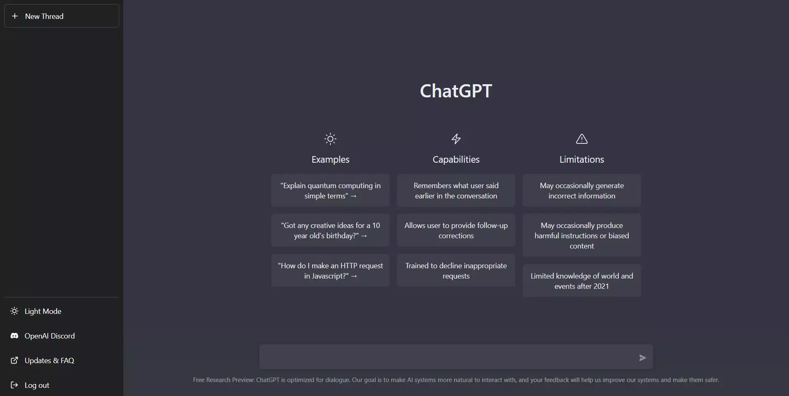

ChatGPT
Stellen Sie sich vor, Sie müssten nie wieder Hausaufgaben selbst machen. Stattdessen könnten Sie mit einem «intelligentem» Programm wie ChatGPT chatten und es würde Ihnen alle Ihre Aufgaben erledigen.

ChatGPT ist ein von OpenAI entwickeltes künstliches Intelligenz System, welches einem ermöglicht, in natürlicher Sprache mit einem Computer zu kommunizieren und diese Aufgaben zu stellen. Es steht einem Kostenlos im Netz zur Verfügung. Innerhalb von fünf Tagen haben sich auf ChatGPT etwa 1 Millionen Benützer registriert. ChatGPT ist in der Lage auf Fragen und Aufgaben in natürlicher Sprache zu antworten oder auszuführen. ChatGPT analysiert dabei die eingegebenen Informationen und verwendet sein Wissen und seine Fähigkeiten um eine Antwort oder Lösung zu generieren.
Aber wie funktioniert ChatGPT?
ChatGPT wurde auf großen Mengen an Textdaten trainiert, um ein breites Verständnis von Sprache und menschlichem Wissen zu entwickeln.
Der Trainingsprozess von ChatGPT besteht aus zwei Hauptphasen: der Pre-Training-Phase und der Fine-Tuning-Phase.
In der Pre-Training-Phase wird das Modell auf einem großen Korpus öffentlich verfügbarer Texte trainiert, wie zum Beispiel Büchern, Artikeln, Webseiten und anderen textbasierten Quellen. Dabei wird das System darauf trainier, dass es Vorhersagen über das nächste Wort in einem Text zu treffen hat, basierend auf den vorherigen Wörtern. Diese Pre-Training-Phase hilft dem Modell, ein grundlegendes Sprachverständnis und Wissen über die Welt zu entwickeln.
Nach der Pre-Training-Phase folgt die Fine-Tuning-Phase. Hier wird das System auf spezifische Aufgaben oder Anwendungsbereiche abgestimmt. Zum Beispiel kann es auf E-Mails antworten, Kundensupport bieten oder als Chatbot eingesetzt werden. In dieser Phase wird das System mit spezifischen Trainingsdaten und einer bestimmten Zielaufgabe trainiert, um die Leistung und Anpassungsfähigkeit an die spezifischen Anforderungen zu verbessern.
Das Training des Systems erfolgt durch die Optimierung von Millionen von Parametern, die die Gewichtungen und Beziehungen zwischen den Wörtern und Sätzen im Modell darstellen. Das trainierte System kann dann verwendet werden, um menschenähnlichen Text zu generieren, indem es auf eine gegebene Eingabe reagiert und eine entsprechende Antwort generiert.
Es ist wichtig zu beachten, dass ChatGPT ein statistisches System ist und seine Antworten auf Wahrscheinlichkeiten basieren, die aus dem Trainingsprozess abgeleitet werden. Es kann jedoch vorkommen, dass ChatGPT nicht immer korrekte oder angemessene Antworten liefert.
ChatGPT kann die meisten Aufgaben sehr gut lösen aber viele auch weniger gut. Fragen zu ileaglen Themen beanntwortet es beispielsweise nicht. Ich habe dem Chatbot mehrere Aufgaben gestellt und zwei davon werden Sie sehen.

Ich habe herausgefunden, das ChatGPt sehr gut Deutsch sowie Mathe Aufgaben lösen kann. Wie man am Beispiel erkennen kann, habe ich dem Bot gefragt ob es mir einen Gedicht über den Klimawandel schreiben kann. Was dabei raus kam, hat mich sehr beeindruckt und auch sehr schokiert. Kurz dachte ich mir, dass dieses Gedicht von einem Menschen geschrieben wurde, weil ich sofort Emotionen und Gefühle erkennen konnte, beispielsweise in der letzten Strophe. Es schien mir, als wäre der Schreiber wütend bis ich realisierte, dass das von ChatGPT geschrieben wurde.
Es ist echt sehr überwältigend, was ein Chatbot alles für Aufgaben erledigen kann. Aber wie bereits schon erwähnt habe, kann es nicht alle Aufgaben gleich gut lösen.
ChatGPT konnte auf all meine Fragen beantworten, deshalb habe ich recherchiert und gesucht ob es Fälle gab, wo der Bot falsche antworten gegeben hat. Auf meiner Suche bin ich dann auf ein gutes Beispiel gestossen, welches ein Beitrag vom Schweizer Radiosender ist. Hier können Sie sich den ganzen Beitrag anhören.
Die Frage an ChatGPT war: "Wie sammelt man Kuh-Eier ein?". Man würde jetzt denken, dass es einem sagen würde, dass es keine Kuh-Eier gibt aber die Antwort von ChatGPT war, dass man Handschuhe damit man sich vor Bakterien schützt, was natürlcih ein absoluter Unsinn ist. Ich habe diselbe Frage dem Programm wieder gestellt und tatsächlich hat es meine Frage korrigiert. Das zeigt, dass das Progromm immer mehr trainiert und verbessert wird, dass es möglicht richtige und genaue antworten gibt.
Nach meiner Meinung ist ChatGPT eine grosse Hilfe für Menschen und spart viel Zeit. Vor allem in der Bildung, kann es sehr nützlich sein. Beispielsweise Schüler und Schülerinnen welche sich keine Nachhilfestunden leisten können, steht das Programm kostenlos im Netz zur Verfügung. Allerdings finde ich, dass es eine Grenze geben sollte, wo man ChatGPT strikt nicht benützen sollte. Durch das könnte das Denken der Menschen verloren gehen und zu einer Faulheit entwickeln!